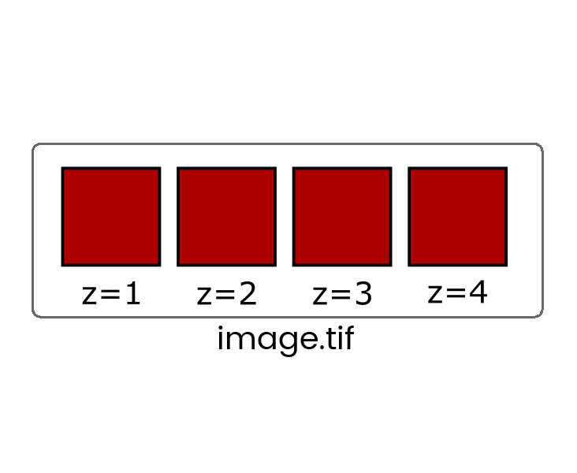
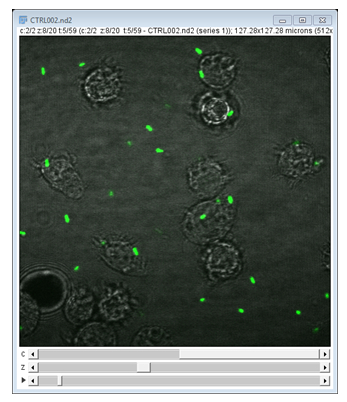
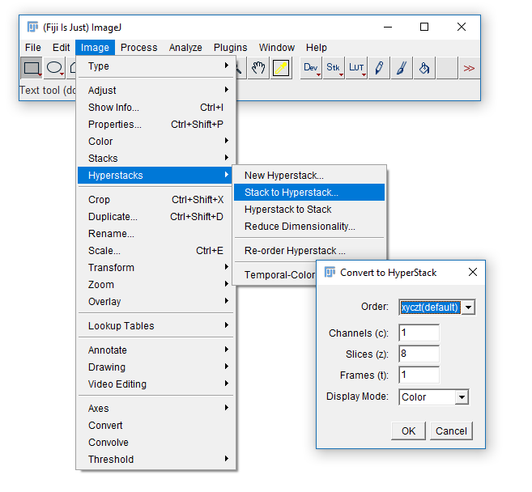
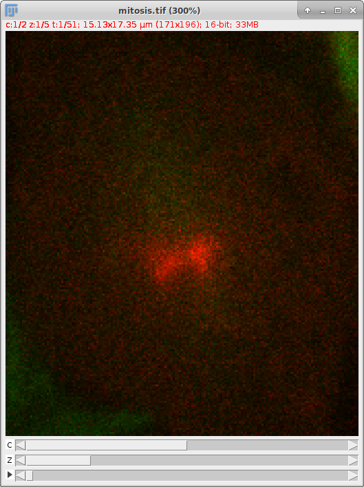
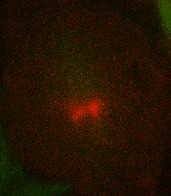
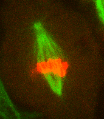
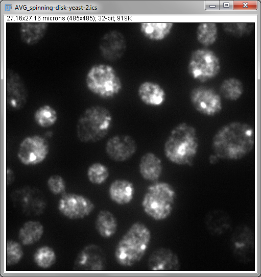
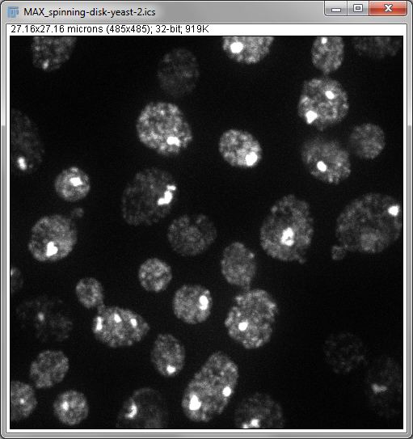
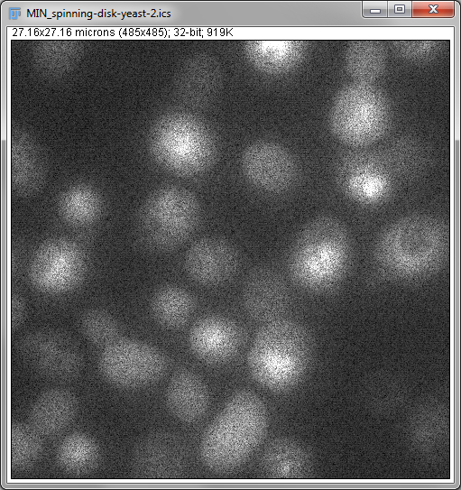

Stacks and Hyperstacks
Erick Martins Ratamero
Research Fellow
Stacks
Understanding how Fiji deals with multidimensional images
Some file formats (eg. TIF) can store multiple images in one file which are called stacks

When more than one dimension (time, z, channel) is included, the images are still stored in a linear stack so it's critical to know the dimension order (eg, XYCZT, XYZTC etc) so you can navigate the stack correctly.
You will very rarely have to deal with Interleaved stacks because of Hyperstacks which give you independent control of dimensions with additional control bars.
 Convert between stack types with the [Image > Hyperstack] menu
By default, Fiji will only show you one two-dimensional image (slice) at a time.
Bars at the bottom of the window indicate there are multiple slices on a given image.
Three-dimensional data structures are named Stacks. That means a series of images (multiple Z slices, or multiple timepoints, or multiple channels).
When multiple of those cases are in place at the same time, these data structures are named Hyperstacks. That means, typically 4 or 5-dimensional objects.
- Run Fiji (Look for the shortcut on your desktop)
- Open
18-mitosis.tif - Check the dimensionality using
[Image > Properties] - Change the dimensionality using
[Image > Hyperstacks > Stack to Hyperstack...]. - Did it go wrong? Can you figure out why?
- (an example that works: C=2, Z=15, T=17)
- What happens if you try C=3, Z=10, T=17? Would you expect it to work?
A way of reducing the dimensionality of your image without losing (too much) information is using projections.
 171 x 196 x 2 x 5 x 51 5D image converted to 171 x 196 x 2 x 51 4D image
Some common projections are sum, maximum and minimum.
  How would these projections be affected by extra out-of-focus slices? How about bright random outlier pixels?
Which projection would you use to better determine distances between structures?